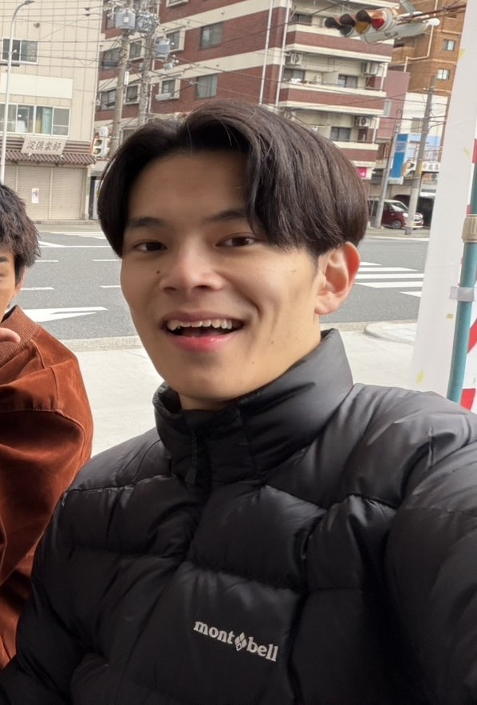
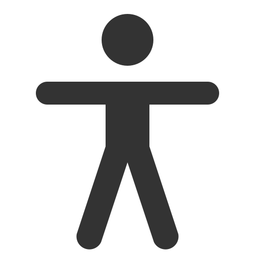
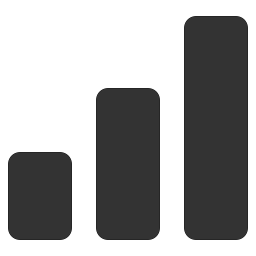

HIYU YAMAUCHI PORTFOLIO
SCROLL
ABOUT
私について
- NAME
- 山内 飛勇 （やまうち ひゆう）
- INFORMATION
- 2003年生まれ。大阪府八尾市出身。
- QUALIFICATION
- Google アナリティクス認定資格（2026年3月取得）
- ウェブ解析士（2026年9月取得）
- GITHUB
- https://github.com/hiyu15123
- LIKE
- ランニング、筋トレ、ラジオ聴取、サカナクション
BACKGROUND
これまで-
2024.03
清風情報工科学院 デザイン・コンピュータ学科 卒業
-
2024.04 - 2025.04
東京のWEB制作会社 / フロントエンド
- Pugでヘッダーやフッターをモジュール単位のファイルに分割し、複数ページで再利用する構成を構築
- WordPressテーマのカスタマイズ（テンプレートタグ、ループ処理、プラグイン対応）
- Gitの運用がなかったため、自ら書籍で学び組織アカウントを作成
-
2025.05 - 2025.12
アウトドア用品店 / 接客・販売（アルバイト）
-
2026.01 - 2026.09
Webマーケティング会社 / Webコーダー
中小企業のコーポレートサイトやメディアサイトのリニューアル・改修を担当（会社都合により退職）
- ディレクション、デザイン、コーディング、WordPress実装まで一貫して担当
- AIを中心とした制作フローで設計と仕様を自分で組み立て、生成コードとプレビューを確認してから反映
- サーバーパネルでのデータベース構築、サイト移管、リダイレクト設定
-
NOW
JavaScriptの復習と作品制作
- 前職はAI中心の制作フローだったため、JavaScript Primerで言語仕様を復習
- 復習した内容をもとにReact・Vueで作品を制作
- ポートフォリオのアクセシビリティと表示パフォーマンスを見直し
SKILL
できることHTML、Scss、Pug
習熟度：応用レベル（5/5）
BEM記法とFLOCSSで設計し、命名規則とディレクトリの方針を先に決めてから実装に入ります。実務ではPugでヘッダーやフッター、繰り返し使うパーツをモジュール単位のファイルに分け、複数ページで使い回す構成を組んでいました。色や余白はCSS変数で一元管理し、マルチデバイス対応ではSassのmixinでブレイクポイントを共通化しています。
JavaScript
習熟度：中級レベル（3/5）
Vanillaを基本に記述します。Swiper・GSAPを用いたスライダーやアニメーションの実装ができます。DOM操作を中心に、タブ切り替えやドロップメニューなどのUI実装が得意です。

アクセシビリティ
習熟度：基礎レベル（2/5）
代替テキスト、見出し階層、フォーカスの可視化といった基本を理解しています。このポートフォリオでも、画像の代替テキストの見直し、見出し階層の是正、パンくずのマークアップ、prefers-reduced-motionへの対応を行いました。WCAGに沿った検証はこれからで、実務で本格的に取り組みたい領域です。
表示パフォーマンス
習熟度：基礎レベル（2/5）
画像の書き出しサイズの見直しとフォーマット変換、ファーストビュー外の遅延読み込み、Webフォントの非同期読み込みに対応できます。このポートフォリオでは、読み込む画像の合計を14.5MBから2.6MBまで削減しました。
React.js
習熟度：基礎レベル（2.5/5）
UdemyやYoutubeでコンポーネント設計や、useStateなどのフックを学習しました。propsやフックを活用して基礎的なWebアプリを作成できます。今はTypeScriptと組み合わせたり、Next.jsを詳しく学んでいる途中です。
Vue.js
習熟度：基礎レベル（2/5）
Vueの基礎を学び、練習としてTodoリストを作成しました。refやv-onなどの基礎構文を使用して、タスクの追加や削除を実装しました。さらにローカルストレージの実装や外部ライブラリを使用してタスクを並び替えられるようにしました。
WordPress
習熟度：中級レベル（3.5/5）
2社でテーマの実装とカスタマイズを担当しました。テンプレートタグやループ処理、プラグインでのカスタマイズに加え、サーバーパネルでのデータベース構築やサイト移管、リダイレクト設定まで対応できます。個人でも静的サイトのWordPress化に取り組みました。

GA4、GTM、Clarity
習熟度：基礎レベル（2/5）
ウェブ解析士とGoogle アナリティクス認定資格を取得しました。実務ではGA4やGoogle タグ マネージャー、Microsoft Clarityの設置を担当し、計測できる状態を整えるところまで対応できます。各ツールのレポートの見方も把握しています。


OTHER TOOLS
Figma、Photoshop、Illustrator、GitHub、Claude Codeを使用しています。デザインカンプの確認にはFigma、画像の書き出しや加工にはPhotoshopとIllustratorを使用します。専門学校ではIllustratorでポスターやタブロイド紙を制作し、実務でも継続して使用しています。ソースコードはGitHub上でバージョン管理を行っています。1社目ではGitの運用がなかったため、自ら書籍で学び、組織アカウントを作成しました。2社目ではClaude Codeを中心とした制作フローで、設計や仕様を自分で組み立てたうえで実装を任せる進め方をしていました。